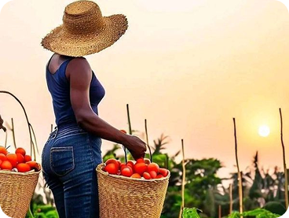
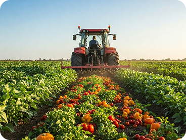
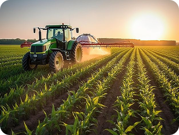
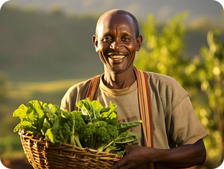
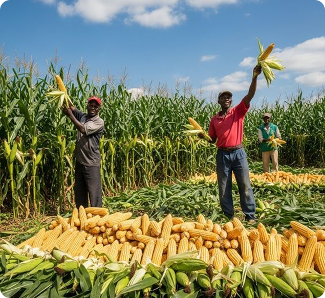

AgriEdays
AgriEdays : Salon de l’Agro-Industrie, de l’Agriculture Intelligente et de l’Environnement. AgriEdays est l’événement majeur annuel dédié à l’agriculture, aux innovations agricoles et à l’environnement en Afrique. Organisé par AgriEdev, ce salon rassemble les acteurs clés du secteur agricole : producteurs, institutions publiques, chercheurs, investisseurs et entreprises privées pour échanger, co-créer et promouvoir des solutions durables et innovantes. Depuis ses premières éditions en 2018, 2019 et 2021, AgriEdays s’est imposé comme un carrefour stratégique pour le développement agricole, l’innovation technologique et la coopération intersectorielle. L’édition 2026 s’annonce comme l’une des plus ambitieuses, plaçant l’Afrique au cœur de l’agriculture de demain.
Nos événements
À propos de nous
Née des recommandations du Salon de l’Agro-Industrie et de l’Environnement, AgriEdev Africa une structure panafricaine innovante dédiée à la transformation de l’agriculture en opportunité d’investissement accessible, rentable et durable, plaçant l’Afrique au cœur de l’agriculture de demain.
Notre vision : Créer un écosystème intégré et durable de valorisation des produits agricoles locaux et transformés, associant production, transformation, distribution, digitalisation et tourisme rural.
Ce que nous faisons : AgriEdev conçoit, développe et met en œuvre des chaînes de valeur agricoles intégrées reliant le producteur rural au consommateur urbain à travers des structures physiques et numériques interconnectées. Nous plaçons l’agriculture au cœur du développement économique africain en fédérant tous les acteurs du secteur.
AgriEdays
Depuis 2018, AgriEdays est devenu le rendez-vous panafricain des acteurs de l’agro-industrie, de la finance verte et de l’environnement. Nos événements visent à :
- Promouvoir les innovations agricoles et les investissements durables ;
- Favoriser les échanges entre décideurs, chercheurs, investisseurs et producteurs ;
- Mettre en lumière les opportunités d’affaires agricoles en Afrique.